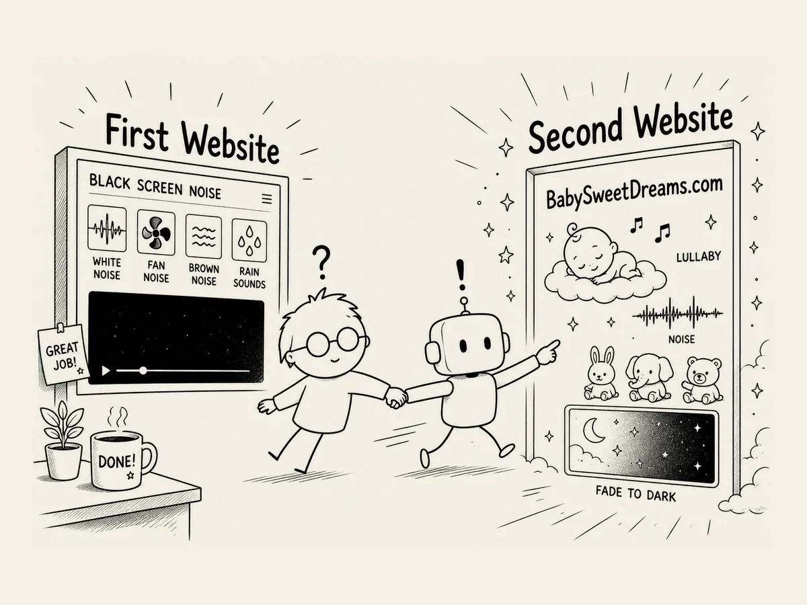

1.
Ich wage mich an meine zweite Website. BabySweetDreams.com
Ich hatte meine erste Website gebaut.
Allein das fand ich schon ziemlich großartig.
Danach wollte ich mich ein bisschen ausruhen.
Aber noch am selben Tag, an dem ich die erste Website online stellte,
plante ich schon meine zweite.
Seltsam.
Vielleicht bekam ich neue Energie, weil ich sah,
wie etwas, das ich mir vorgestellt hatte,
tatsächlich Wirklichkeit wurde.
Beim Bau der ersten Website
hatte ich auch einiges über Schlaf gelernt.
Zum Beispiel,
wie lange ein Mensch ungefähr braucht, um einzuschlafen,
oder dass Geräusche beim Schlafen helfen können.
Dann begann ich mich für Babyschlaf zu interessieren.
Was wäre, wenn man Wiegenlieder und Geräusche mischt,
damit Babys ganz entspannt einschlafen können?
Geräusche, die sie beim Einschlafen hören können.
Bilder, die sie ganz ruhig anschauen können.
Eine Website,
die sie vor dem Einschlafen eine Weile anschauen können,
während der Bildschirm langsam dunkler wird.
Hm.
Das könnte interessant werden.
Es schien schwieriger zu sein als die erste Website.
Nur Ton würde nicht reichen.
Ich brauchte auch Bilder.
Ich brauchte Wiegenlieder.
Ich brauchte Bewegung.
Und weil Babys das anschauen würden,
musste ich noch vorsichtiger sein.
Ich fragte die KI.
„Kannst du das machen?“
Die Antwort kannte ich schon.
„Ja, das ist möglich.“
Wenn ich schon dabei war,
suchte ich auch gleich nach einer Domain.
BabySweetDreams.com
